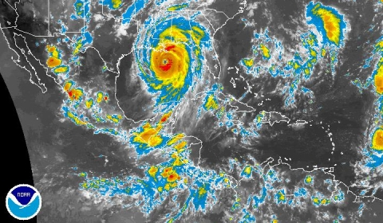
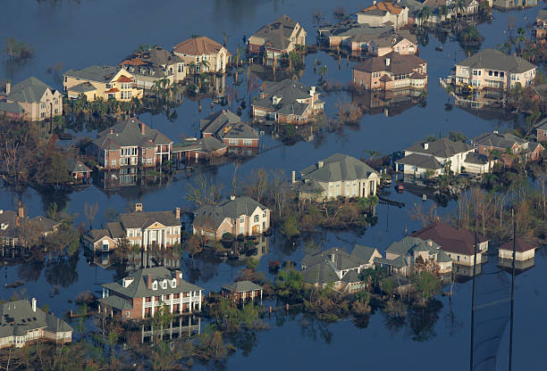
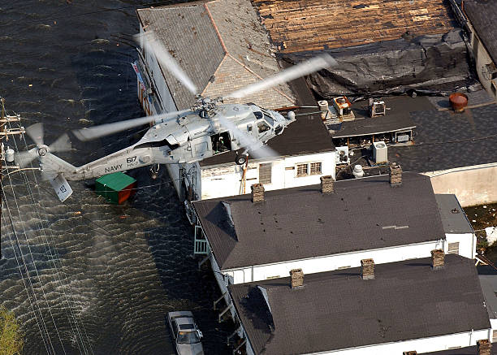

Impatto ambientale
Katrina ha devastato l'ecosistema delle zone umide della Louisiana, accelerando la perdita di territorio costiero. Milioni di litri di sostanze chimiche e acque reflue si sono riversate nell'ambiente.
Impatto sociale
L’uragano ha causato la perdita della casa per centinaia di migliaia di persone, con interi quartieri distrutti. Le comunità più povere hanno subito le conseguenze peggiori.
Risposta governativa
Il governo è stato fortemente criticato per la lentezza e inefficacia nella gestione dell’emergenza. Questo ha portato a una riforma della FEMA e una revisione dei piani di risposta ai disastri.